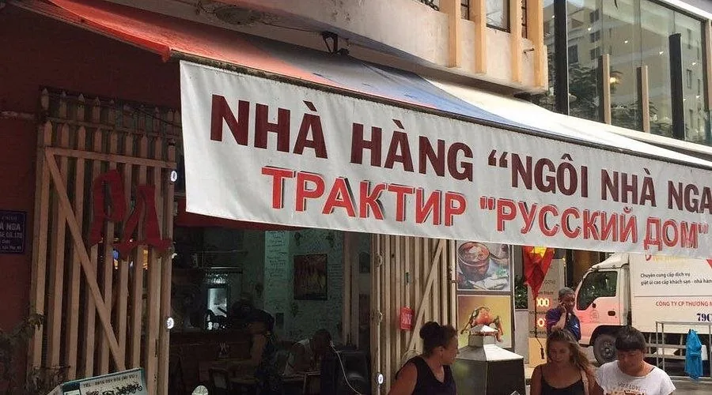
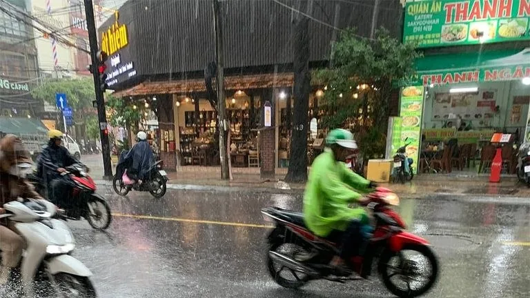

나트랑 언제 갈까: 베트남 여행의 시즌별 특징
글쓴이: 옥사나 야스노바 · 2026년 11월 16일
나트랑에 대해서만 이야기합니다.
베트남에는 해안 전체에 공통된 여행 시즌이 없습니다. 같은 달이라도 나트랑, 무이네, 다낭의 날씨는 크게 다릅니다. 이 글에서는 오직 나트랑의 기후와 여행 시즌, 그리고 달마다 다른 여행의 특징에 대해 이야기하겠습니다.
나트랑은 어디에 있고, 왜 가야 할까
나트랑은 베트남 중남부 칸호아성, 남중국해 연안에 있습니다. 도시는 한쪽은 푸른 산, 다른 한쪽은 바다와 섬으로 둘러싸인 그림 같은 만을 따라 길게 이어져 있습니다. 긴 모래 해변, 아름다운 바다 풍경, 열대 자연, 잘 갖춰진 도시 인프라가 여행자들을 끌어들입니다.

또한 나트랑은 러시아어를 쓰는 여행자들에게 특히 매력적인 곳입니다. 꽤 ‘러시아적인’ 도시이기 때문입니다. 카페에는 러시아어 메뉴가 있고, 거리에는 러시아어 간판이 보이며, 러시아어를 잘하는 베트남 사람들도 있습니다. 그래서 외국어를 몰라도 편하게 여행할 수 있습니다. 베트남 특유의 정취와 함께 붉은 깃발과 소년단 스카프로 상징되는, 러시아 사람들에게 익숙한 사회주의의 모습도 볼 수 있습니다. 나트랑에는 러시아에서 이주해 온 사람들이 많이 살고 있어서 익숙한 음식과 식료품, 서비스도 있습니다.



나트랑의 여행 시즌
크게 보면 나트랑의 여행 연도는 두 시즌으로 나뉩니다.
- 건기 — 2월부터 8월까지
- 우기 — 9월부터 1월까지
9월과 1월은 환절기로 여겨집니다. 비가 많이 올 수도, 건조할 수도 있으며 해마다 다릅니다.
시기별로 하나씩 살펴보겠습니다.
겨울 여행 시즌: 12월과 1월
나트랑의 새해 여행 시즌은 12월에 시작됩니다. 새해를 맞이하려는 여행자들이 나트랑으로 오기 시작합니다.
베트남 사람들도 새해를 기념하지만, 그들의 가장 큰 명절은 ‘뗏(Tết)’이라 불리며 날짜가 해마다 달라 보통 1월 말이나 2월에 해당합니다.
12월과 1월에는 러시아의 새해 연휴도 있습니다. 1월 7일 성탄절, 1월 13일에서 14일로 넘어가는 밤의 ‘구 새해’, 1월 19일 주현절이 이어지는 러시아의 긴 연휴는 따뜻한 나라로 떠날 좋은 이유가 됩니다.

12월과 1월은 해변 여행에 알맞은 시기가 아닙니다. 바다에 파도가 거세고 물은 탁하고 회색빛이며, 수영할 수 없을 만큼 큰 파도가 일어납니다. 수영은 정말 위험합니다!
깜라인 지역의 5성급 호텔에 묵는 여행자들은 이 시기에 수영장에서 쉽니다. 나트랑을 선택한 사람들은 투어와 온천을 즐깁니다. 시내에는 남쪽의 ‘100 에그(100 Egg Theme Park)’, 북서쪽의 I-Resort 같은 온천 단지가 여러 곳 있습니다. 땅속에서 솟아나는 뜨거운 미네랄 온천수 수영장에서 수영하고 머드 온천을 즐기며, 바다가 거친 날에도 쉴 수 있습니다.


해변 시즌: 2월, 3월, 4월
2월, 3월, 4월은 나트랑 해변 여행에 가장 좋은 달로 꼽힙니다. 이때 바다는 잔잔해지고 따뜻하지만 아직 지나치게 뜨겁지 않은 쾌적한 온도가 됩니다. 물은 맑고 햇살은 부드럽습니다.
해변 시즌이 가장 아름다운 때는 바로 봄입니다. 여름처럼 심한 더위와 높은 습도가 아직 없고, 바다는 특히 맑고 잔잔합니다.
이 시기에는 사진과 영상이 특히 잘 나옵니다. 햇빛의 각도와 파란 하늘, 파란 바다 덕분에 멋진 사진을 찍을 수 있습니다.

여행 시즌의 절정: 5월 ~ 8월
5월, 6월, 7월, 8월은 다이빙과 바다 액티비티를 즐기기에 아주 좋은 시기입니다.

이 시기에는 덥지만 답답하지는 않습니다. 습도가 최고치에 이르지 않아 날씨가 러시아 소치의 여름 같습니다. 바다에는 산들바람과 작은 파도가 일어 봄처럼 매끄럽고 잔잔하지는 않습니다. 아이들은 바다에서 놀며 파도 타기를 즐깁니다.
수상 레저를 좋아하는 사람들을 위한 시기로, 카이트서핑, 즉 물 위에서 낙하산을 타고 나는 것도 그중 하나입니다. 이 시기에는 해변에서 파란 하늘을 배경으로 바다 위를 나는 알록달록한 낙하산들의 멋진 풍경을 볼 수 있습니다.

아시아의 여름은 너무 더우니 여름에는 나트랑에 가지 않는 게 좋다는 말에 겁이 난다면, 제 경험으로 말씀드리겠습니다. 여름은 나트랑을 여행하기에 아주 좋은 시기입니다!
네, 여름이니 어디나 그렇듯 덥습니다. 대신 초록이 가득하고 햇살과 과일이 풍부하며, 저녁에는 별이 가득한 하늘을 볼 수 있습니다. 여름에는 해변의 카페들이 모두 문을 엽니다. 테이블이나 푹신한 빈백에 앉아 파도를 바라보며 저녁 내내 바닷가에서 시간을 보낼 수 있습니다. 관광지 전체가 제대로 돌아가는 때가 바로 여름입니다. 시즌의 절정이니 여름에 오는 것을 두려워하지 마세요.


9월: 건기에서 우기로 넘어가는 시기
9월은 환절기로 여겨집니다. 9월이면 나트랑에 습한 기운이 덮이기 시작합니다. 마치 함맘(터키식 사우나)에 앉아 있는 느낌입니다. 그렇게 덥지는 않은데 습기 때문에 물방울이 얼굴을 타고 흘러내립니다.
9월에는 가끔 비가 올 수 있지만 아직 우기는 아닙니다. 더울 수도 있고, 기온이 25~28도로 내려가 조금 선선할 수도 있습니다.
9월은 해마다 다릅니다.
10월: 우기의 시작
10월. 이때부터 비가 더 자주 내립니다. 15분 정도지만 하루에 3~4번 내리기도 합니다. 그러다 이틀쯤 비가 오지 않다가 다시 하루에 몇 번씩 내립니다.
10월의 기온은 9월과 비슷하지만 습도는 더 높아집니다. 건조한 기후에 익숙한 북쪽 지방 사람들은 높은 습도를 견디기 힘들어서 밖에서 숨쉬기조차 어려울 정도입니다. 그래서 나트랑 여행에 가장 불편한 시기는 10월과 11월입니다.


11월: 우기의 절정
11월은 나트랑 여행 시즌에서 가장 한산한 시기입니다.
11월에는 긴 장마와 폭우, 뇌우가 시작됩니다. 바다는 거칠어지고 거대한 파도가 일어 가까이 다가가기조차 어려울 정도입니다. 뇌우는 러시아의 5월 뇌우와 비슷하지만, 이곳에서는 훨씬 더 오래 계속될 수 있습니다.


밤에는 아침까지 쉬지 않고 비가 내리기도 합니다. 굵고 무거운 빗방울이라 소리도 아주 큽니다. 지붕을 두드리는 소리 때문에 밤에 잠을 이루지 못할 때도 있습니다.
12월: 우기의 끝
10월에 시작된 비는 11월 내내 이어집니다. 12월에는 줄어들지만 여전히 우기입니다.
또한 12월 날씨는 해마다 다릅니다. 예를 들어 2024년 12월은 폭풍과 바람이 아주 심했습니다. 바람이 너무 강해서 일부 가게에서는 가벼운 문이 날아가기도 했습니다.
반면 지난해인 2025년 12월은 잔잔하고 따뜻했으며 비도 그리 많지 않았습니다.
나트랑은 언제 가는 게 좋을까? 정리
12월 — 1월: 새해, 투어, 온천 단지
2월 — 4월: 해변 휴양, 수영, 사진 촬영
5월 — 8월: 바다, 수상 레저, 나이트라이프
9월: 좀 더 저렴한 여행, 변덕스러운 날씨
10월 — 11월: 폭우의 위험이 있는 저렴한 여행
열대 나라에서 새해를 맞이하고 싶다면 12월이나 1월에 오세요. 하지만 날씨 운이 따를지는 장담할 수 없습니다.
순수한 해변 휴양, 아름다운 바다와 그림 같은 해변을 좋아한다면 2월, 3월, 4월, 5월에 오세요.
바다와 저녁 산책, 활기찬 나이트라이프가 있는 뜨거운 여행을 좋아한다면 6월, 7월, 8월에 오세요.
나트랑에서 쉬고 싶지만 비용이 중요하다면 9월, 10월, 11월 항공권을 추천합니다. 이 세 달은 보통 호텔, 아파트, 투어 가격이 가장 낮습니다. 이 시기에는 할인과 좋은 조건의 상품도 많이 찾을 수 있습니다.
그러니 저렴하게 여행하고 싶고 높은 습도와 비가 두렵지 않다면 9월, 10월, 11월에 오세요.
많이 절약할 수 있습니다.